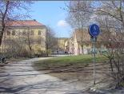
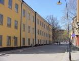
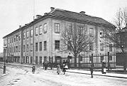
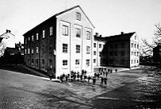
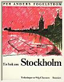
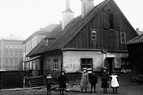
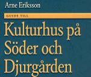
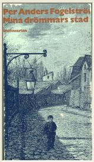
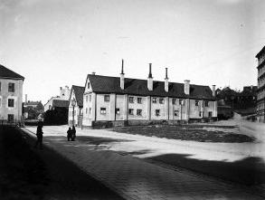
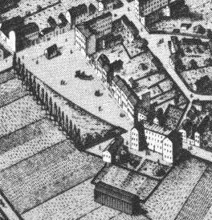

Södermalm i tid och rum
Malongen Ur Stockholmsliv, Staffan Tjerneld, PA Norstedt & Söners förlag, 1950
|
I klassrummen fick ända upp till femtiofem pojkar
eller flickor samsas - undervisningen var skild - och den enda komfort som bjöds var en kopparkruka
med dricksvatten och två bleckmuggar. På vintern var kylan svår inne i skolan, varför barnen ofta satt
med ytterkläderna på sig under lektionerna, något som gjorde sitt till att sprida ohyra. På frukostrasten
- den var kort eftersom undervisningen endast pågick från åtta till ett - åt barnen ute och förtäringen
bestod av skummjölk köpt i ett magasin i Värmdögatan 47 och en bulle. Några skurlov förekom inte,
varför smutsen i skolan var påtaglig. Lärarnas standard var helt i nivå med skolhuset, åtminstone i början av 70-talet då P. L. Lindgren var elev i Malongen. Aga var regel och utdelades inte bara för olydnad utan också för okunnighet. Vid många tillfällen övergick agan i så svår misshandel att läkare måste ingripa. En pojke fick till exempel ett slag så att han blev döv på ena örat för livet medan en lärarinna, »skäggmamma», gick mera på tortyrlinjen och hade för vana att fläta samman en fyra, fem hårstrån på barnens huvuden och sedan hastigt rycka bort dem. Ständiga uppträden förekom och ibland verkliga slagsmål. Vid ett tillfälle lyckades P. L. Lindgren dyka för ett verkligt dråpslag från en lärare, med resultat att denne i stället körde näven i en kakelugn och fick gå med handen i bandage i ett par veckor. Flera lärare måste avstängas för spritmissbruk. Till lärarnas försvar bör man kanske säga att elevmaterialet i den tidens Katarina var avgjort svårbehandlat. I Lindgrens klass gick bland andra två pojkar som var trumslagare hos »korvarna», stadsvakten, och som inte bara hade brännvin med sig i skolan utan också brukade roa sig med att stjäla lärarnas tobak. För att inte barnens hemväg från skolan skulle kantas av alltför många sönderslagna fönsterrutor tvangs de vandra i så kallade rotar under uppsikt av en något så när pålitlig elev. Undervisningen omfattade endast elementära kunskaper, gymnastik förekom, men endast i form av armrörelser och det åskådningsmaterial som tillhandahölls bestod av kolorerade planscher föreställande scener ur bibliska historien eller exotiska djur. Trots denna nedstämmande miljö har Lindgren flera glada minnen från sin skoltid. Han kan, bland annat berätta om hur han en gång skickades till Bastmans affär för att köpa en rotting med vilken hans kamrat Olle skulle agas. På återvägen mötte han en av gesällerna i pappans hattmakarverkstad. Då denne fick höra om expeditionens mål tog han rottingen och doppade den i det »skedvatten» med vilket hattskinnen behandlades vilket fick till följd, att rottingen blev ytterst skör. Då läraren gav order om nedknäppning av byxorna på offret och började agan gick också rottingen omgående i småbitar som spreds över den jublande klassen. |
  Malongen 2002 från söder. Malongen 2002 från söder.
  Malongen 2002 från söder. Malongen 2002 från söder.
  Malongen omkr 1910 från norr. Malongen omkr 1910 från norr.
  Malongen omkr 1910 från NO. Malongen omkr 1910 från NO.
|
Ur En bok om Stockholm, Per Anders Fogelström, 1978
|
 |
Intill Malmgårdsvägen och Nytorget ligger Malongen. Här hade Gavelius svåraste konkurrent Leijonancker sitt vantmakeri, huset är från hans tid (slutet av 1600-talet). Leijonancker var under många år Nytorgets store man. Han ägde vantmakeriet där man bland annat gjorde handskar för hären, han hade också stora tobaksodlingar. Själv hade han trettiotvå barn i sina tre äktenskap, i sin fabrik anställde han föräldralösa barn från Danviken. |
Det är många små tragiska figurer som traskar mellan vävstolarna i stenhuset vid Nytorget. Hans Bengtzon t.ex., en båtsmans föräldralösa barn. Två gånger har Hans fasttagits för tiggeri och straffats men ändå nekar han att svälta ihjäl tyst och stilla, i stället slår han sig ihop med "tjuvepojkar". Sedan han "hårdeligen blivit slagen med ris för sin odygds skull" har han sänts till Danviken och därifrån blivit utlånad till vantfabriken.
|
I sin krafts dagar var Leijonancker (invandrad skotte vid namn Young som adlats till
Leijonancker) en ganska självrådig herre, 1670 klagas det över att han mot förbud stängt av
Nytorget - och torget var avsett att användas som mönstringsplats.
En sonsons sonson till gamle Daniel var den Leijonancker som i mitten av i 800-talet kom med
förslag till vattenledning i Stockholm och också fick genomföra projektet. Daniel Leijonancker invecklade sig småningom i alltmer vidlyftiga affärer, gick i konkurs - och huset övertogs av den framgångsrikare Gavelius. |
  Fatburs-Gård på Värmdögatan 51, Färgargränd, Renstiernas Gata, Malongen år 1910. I bakgrunden skymtar Katarina södra folkskolan samt den s k Malongen. Den gamla fatbursgården låg ivägen för framdragningen söderut av Renstiernas Gata. Bilden tagen från öster. Fatburs-Gård på Värmdögatan 51, Färgargränd, Renstiernas Gata, Malongen år 1910. I bakgrunden skymtar Katarina södra folkskolan samt den s k Malongen. Den gamla fatbursgården låg ivägen för framdragningen söderut av Renstiernas Gata. Bilden tagen från öster.
|
På 1740-talet arrenderar en fabrikör Madelung fabriken, efter honom fick huset namnet Malongen. Det var senare sjukhus under Gustav III:s krig, kolerasjukhus, en tid i början av 1800-talet bostadshus. Då låg "Louisas krog" som var ökänd för sina bråkiga gäster i huset. Senare blev huset folkskola, bland eleverna fanns trumslagarpojkarna från "korvkasernen" vid Tjärhovsgatan, de kom till skolan med var sitt kvarter brännvin i bakfickan.
Husets översta våning tillkom vid en ombyggnad 1867. En stor tomt har hört till med trädgård och
tobaksfält.
Mitt emot Malongen, Malmgårdsvägen 47, ligger ett litet hus på en bergknalle. Här firades ett väldigt
bröllop på 1870-talet (återgivet i "Mina drömmars stad"). Man åt och söp i tre dagar. Bruden var
tvätterska och hade klätt upp sig med de herrskapskläder hon hade till tvätt.
|
 |
Ett tillfälligt namn på Nytorget har varit »Lejonankars Tårg« efter den från Skottland invandrade klädesfabrikören
Daniel Young, 1666 adlad Leijonancker. Han ägde ett stort område söder om Nytorget, vari bl.a. den tidigare Stadsträdgården ingick. Han lät uppföra en textilfabrik, senare kallad »Malongen«, som ännu finns kvar vid torget. Huset är Stockholms äldsta bevarade fabriksbyggnad. P. A. Fogelström berättar att Leijonancker under slutet av 1600-talet var Nytorgets store man. I tre äktenskap hade han trettiotvå barn. Han tog hand om Danvikens föräldralösa krakar och lärde dem ett yrke. Det var en samling små tragiska figurer som traskade mellan vävstolarna i Malongen. |
Jacob Gavelius var, som vi tidigare berättat, först köpman men sadlade om till klädesfabrikant (vantmakare). Efter ett misslyckat försök att driva klädestillverkning på Tyresö slott övertog han 1688 Leijonanckers vantmakeri och linneväveri vid Nytorget. Knappt ett år före sin död 1698 adlades Jacob Gavelius och tog sig namnet Lagerstedt.
Under 1700-talet var en av ägarna till huset fabrikören J. C. Madelon (eller Madelung). Han ägde en stoff-fabrik och drev klädestillverkning som ett led i textilindustrin vid Hammarby sjö. Fabrikören klagade ofta över Nytorgets illaluktande sopor. Det är Madelon av folkmun förvanskat till Malongen som gett huset dess namn.
Efter textilindustrierna blev lokalerna i Malongen under senare delen av 1800-talet skollokaler. Tjerneld skriver: Mycket hade emellertid inte gjorts för att få byggnaden lämplig för skolbruk. Då söderbarnen skickades dit, hade huset fortfarande fabrikskaraktär. I klassrummen rymdes ända upp till femtiofem pojkar eller flickor - undervisningen var skild och den enda komfort som bjöds var en kopparkruka med dricksvatten och två bleckmuggar. På vintern var kylan svår inne i skolan, varför barnen ofta satt med ytterkläderna på sig under lektionerna, något som gjorde sitt till att sprida ohyra. Några skurlov förekom inte, varför smutsen i skolan var påtaglig.
Per Ludvig Lindgren var under 1870-talet elev i Malongen. Han ansåg att lärarnas standard var helt i nivå med skolhusets. Aga och till och med svår misshandel förekom. Flera lärare måste stängas av för spritmissbruk. Men även elevmaterialet var dåligt och svårbehandlat. En del pojkar hade brännvin med sig i skolan och ett omtyckt nöje var att stjäla lärarnas tobak.
Under hemvägen från skolan delades eleverna in i rotar under uppsikt av någon äldre pålitlig elev. Detta för att skolvägen inte skulle kantas av sönderslagna fönsterrutor eller annan vandalisering.
Även borgarrådet Harry Sandberg skriver i boken En södergrabb berättar (1957) om sin tid som elev i Malongen, där han började sitt första skolår på hösten 1887. I dag är lokalerna i Malongen uthyrda som konstnärsateljeer. En av dem som har lokal där är författaren och konstnären Stig Claesson - populärt kallad Slas. I bl. a. boken Den extra milen har han förlagt en del av handlingen till Malongen:
Tidigt på morgonen har jag gått till min atelje i regn, i snö, i vårkyla eller sommarvärme och ställt en duk på mitt staffli och sen har jag ju äldre jag blivit alltmer övergått från att genast börja arbeta till att börja glo på den jävla tomma duken...
I boken Eko av en vår (1995) skriver Slas:
I vilket fall hade Eva Blom och jag halkat oss över Nytorget och anlänt till min varma atelje. Kåken där vi konstnärer håller till är mycket gediget byggd, man kunde bygga på sextonhundratalet, och när elementen är på har vi det varmt. Inte ens modellerna behöver frysa. På sommaren är ateljen sval.
|
|
Malongen i all korthet
I början av 1600-talet anordnades för armens beklädnad ylleväverier i flera mellansvenska städer, bland annat Uppsala, Arboga, Nyköping och Norrköping. Också Kalmar fick del av den här industrisatsningen. Stockholm fick för sin del en vävskola på Riddarholmen. Det var främst fattiga barn, men också "skalkar, skökor och bofvar", som enligt Claes Lundin, fick lära sig väva och spinna. Umgänget förefaller inte ha varit särskilt lämpligt för barn. Vävskolan var byggd på helt hantverksmässig produktion. Närmare industriell framställning kom det klädesmanufaktori som 1649 flyttades från Arboga till den plats där senare Kungsholms kyrka skulle byggas. |
Ett unikt synbart minne av förgången stockholmsk textilindustri har vi i Malongen, belägen vid Katarina folkskola i kanten av Nytorget. Huset som uppfördes på 1660-talet är ett vackert exempel på fabriksbygge från Karl XI:s tid. Företaget startades av den holländsk-tyske invandraren av skotskt ursprung, Daniel Leijonancker.
Före adlandet 1666 bar han efternamnet Young. Han skymtar sju år tidigare i handlingar såsom bosatt på Södermalm. Där hade han kommit i besittning av ett betydande markområde mellan Vmtertullsgatan (Malmgårdsvägen) och Södermanlandsgatan (Södermannagatan). På sin flacka åkertomt lät han uppföra den ståtliga faktorsbyggnad vi än i dag kan betrakta. Den har en värdighet i uppsynen som anstår ett residens. Som köpman och privilegierad tobaksimportör byggde Leijonancker upp sitt startkapital för textilfabriken.
Till en början tillverkade och sålde fabriken linneväv i kompanjonskap med Hans Olufson. Senare blev Leijonancker ensam ägare. Enligt uppgifter från 1669 hade företaget ej mindre än 1200 anställda och 55 vävstolar. Framställningen, baserad på handoch fotarbete, var högst personalintensiv. Det var hantverksmästare, gesäller, lärpojkar och lärflickor samlade i en kollektivverkstad för massframställning och storförsäljning av kläde. Uppgiftslämnaren anses ha räknat in dem som spann i sina hem på beting åt företaget, därav den höga siffran. Fabriken utnyttjade dessvärre många barnarbetare, som levde under svåra villkor.
Leijonancker kom på 1660-talet in som partner i ett intressant företag av betydande mått. Extra ordinarie kommissarien i kommerskollegium, den välkände köpmannen Jacob Momma-Reenstierna, fick genom ex-drottning Kristinas representanter 1667 arrendera Ösel och Gotland, vilka ingick i den abdikerade drottningens underhållsländer. För att dela det ekonomiska ansvaret engagerade Momma sin bror Abraham och textilföretagaren Daniel Leijonancker i affären.
Leijonancker och kompanjonen Jacob Momma företog 1668 en inspektionsresa till drottning Kristinas östersjööar. Anmärkningsvärd är den kopiösa mängd spirituosa man tagit med. Femhundra liter vin och 40 liter konjak skulle dels läska medföljande stabs strupar, dels tjäna som bestick ning vid affärsmötena i främmande hamn.
De båda kumpanerna blev några år senare osams. En serie av rättegångar mot Leijonancker inledde ett skede som hade till följd att deras gemensamma affärer upphörde. 1676 ockuperades Gotland av danskarna, vilket avsnörde ön från fastlandet med allvarliga konsekvenser för handeln.
Leijonancker var en vital herre och hann avverka tre hustrur på sin jordevandring. Enligt Per Anders Fogelström hade han inte mindre än 32 barn!
Namnet Malongen kom till efter den Leijonanckerska epoken när mästaren Christian Madelon drev fabriken på arrende från 1742. Madelon blev i folkmun Malongen.
Huset har tjänat olika ändamål under århundradenas lopp, både hedervärda och mindre hedervärda. Bland rörelser kan till exempel noteras bordellverksamhet. Från sekelskiftet användes huset i decennier som annex till Katarina folkskola. "Vi hade slöjdundervisning i Malongen", berättar min granne. Lokalerna används numera som konstnärsateljeer.
Tröskeln
|
Porten i planket hade en avrundad, avslipad trätröskel. Soliga morgnar bildade den gräns mellan gårdens
skuggiga dunkel och bergets solskimmer. Över samma tröskel kunde man stiga från ljus till mörker och från
mörker till ljus. Husets barn tumlade ut, stannade ett ögonblick som bländade. Såg kamraterna från husen bredvid vänta i gathörnet, skyndade dit. Och den lilla skaran satte sig i rörelse, på väg mot skolan. Småbarnen skulle till "krubban" vid kyrkogården, de större till det gamla fabrikshuset vid Nytorget, "Malongen". Från fattigbostädernas trängsel gick barnen till skolsalarna, de gamla husen var för länge sedan urvuxna, överfyllda. Agge, Rudde och några av de andra skulle till Nytorget. De hoppade över det stinkande avloppsdiket som följde Stora Bondegatan ner mot Hammarby sjö, tog vägen genom Vita bergen. Tutade som tåg när de ångade förbi bibelkvinnornas vita missionsstation. |
 |
Mörk och dyster tog Malongen emot dem, som om det gamla huset fortfarande bevarade de föräldralösa vantmakarpojkarnas svett, de kolerasjukas gråt och de bostadslösas klagan. Fönstren stod mörka som fängelsegluggar men utanför lyste träden grällt gröna och barnen lekte i flockar under deras kronor.
|
 Värmdögatan 51 i hörnet av Renstiernas Gata från söder år 1927. Till vänster Malongen och Värmdövägen, till höger Renstiernas Gata. Den gamla fatbursgården låg i vägen för framdragningen av Renstiernas gata söderut. |
Från korvkasernen kom skolans mest fruktade buspojkar, stadsvaktens trumslagare. De hade varsin kvarter
brännvin putande i bakfickan och tog en klunk ibland. Dessutom stal de tobak av lärarna och kunde råare
historier och mustigare svordomar än några av de andra barnen.
Trumslagarna knuffade undan de andra ungarna, vankade bredbenta och myndiga över gården. Var de sista
som masade sig innanför porten sedan en skolmamsell länge och ihärdigt klämtat i klockan.
Agge och Rudde var klasskamrater och gick för magister Olsson. Fyll-Olle, sa pojkarna i smyg och det hände emellanåt att magistern skickade ut någon av dem för att köpa sprit vid Nytorget. På vintern hade läraren alltid en varm öl på lut bakom kaminen. När gubben fyllnade till blev han farlig, slog hårt och blint. |
Trögt och trist släpade sig skoltimmen fram, Fyll-Olle halvsov i katedern och gav en order då och då. Klassens trumslagarpojke reste sig och begärde att få gå ut för naturbehov, det gjorde han varje morgon och Fyll-Olle grymtade alltid lika missbelåtet. Utanför träffade pojken en kollega med samma vana. De satt en stund i en backe och tog en återställare innan de släppte varsin stråle på det vanliga trädet, några toaletter hade skolan inte.
Småningom kom den efterlängtade frukostrasten. De som hade råd gick till mjölkmagasinet vid Stadsträdgårdsgatan och drack en mugg skummjölk för två öre. De flesta fick nöja sig med den brödbit de haft med hemifrån. Så här års var det skönt att sitta ute och äta. Värre var det under vintermånaderna - ibland kunde de knappast hålla i brödbitarna med sina bara fingrar. Hur kallt det än var måste de äta utomhus. Återvände genom de långa korridorerna där trägevären för exercistimmarna stod ordentligt uppradade i sina ställ. Hängde upp kläderna på hängarna som var placerade så tätt att lössen aldrig hade några svårigheter att vandra från det ena plagget till det andra.
|
 |
Efter rasten fick Agge i uppdrag att gå ut och handla en ny rotting, trumslagarpojkarna hade knyckt den gamla.
Han gick i dyster stämning: det var Rudde som skulle bli den förste som fick prova den. Agge led alltid av
bestraffningarna, även om de inte drabbade honom själv. Han kände inget av den nyfikna lust och skadeglädje som många av kamraterna visade,
han var bara rädd. Och när Rudde låg där över stolen med nerknäppta byxor och skrek satt Agge illa till mods
och såg stint ner på den illa hanterade pulpeten. Fyll-Olle stånkade och torkade svetten ur pannan och återgick till den mindre handgripliga undervisningen. De lärde sig inte mycket i skolan och bättre skulle det inte bli förrän magistern avskedats för fylleri och misshandel. Det skedde sedan han dragit ena örat av trumslagarpojken så fältskären fick hämtas. Terminens sista vecka fick klassen en ny lärare medan Fyll-Olle dök upp som postbärare i kvarteren. Trumslagarpojken samlade en ansenlig skara som med okuvlig energi förföljde Olsson tills han blev tvungen att söka förflyttning till Kungsholmen för att undkomma sina gamla elever. |
Men denna dag, medan Fyll-Olle fortfarande var deras dagliga kors, gick Agge och Rudde dystra hem från skolan. De stannade i buskagen intill Meijtens gränd för att syna Ruddes välrandade bak och Agge bröt stora saftiga groblad som kamraten stoppade i byxorna för att lindra svedan. Rudde svor på att han skulle hämnas och de hade en nästan trivsam stund när de funderade ut hur de skulle plåga Fyll-Olle. Spikar i stolsitsen, glödga ölflaskans pip. Allt kunde plötsligt förefalla möjligt. Rudde visste att en flickklass hade samlat löss som de i all hemlighet placerat på sin lärarinna, den så kallade Skäggmamma. Och trumslagarn hade pinkat i Olles ölflaska en gång, fast det märkte gubben aldrig. Det fanns mycket att göra.
Ändå visste Agge att han aldrig skulle utföra något av de planerade stordåden. Han var rädd, förstås. Men det var något mer också, något enklare och svårare: han gjorde inte så. Som om något hemifrån hindrade, hans mors öga bevakade honom också i solsalen. Han måste läsa flitigt, vara duktig, bli omtyckt av lärarna. Det fanns pojkar som trots fattigdom lyckades tränga vidare. In genom porten till en värld där man inte behövde gå i ständig skräck.
Skulle man dit fick man inte pinka i Fyll-Olles flaska, ja inte ens vara ouppmärksam eller oartig mot sin lärare. Det var ingenting som Agge kunde tala med Rudde om. Knappast med någon. Det bara fanns, på samma sätt som småbarnsårens skugga alltid funnits över honom. Var en del av hemmet.
Jag ska skita i gubbens hatt, sa Rudde belåtet. Men Agge satt tyst, som rädd för skuggan som föll över tröskeln.